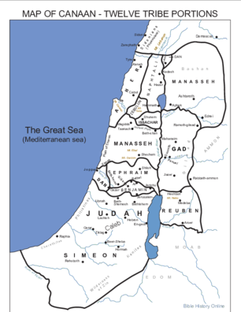

Home Quiz
Shadowland: Beginnings: Week 57
Genesis 49

More on Zebulun
All the "bible maps" I could find of the territory of Zebulun show them as not
touching the Sea of Galilea or the Mediterranean. However Josephus
(Antiquities V 1.22) describes them as stretching from Galilea to the
Carmel on the Mediterranean. The east and west borders in Joshua 19 are
unclear in particulars, mentioning cities unidentified to us today, but
scholars agree that they are clear in general: Zebulun received a landlocked
estate from Joshua.
So, Jacob's prophecy was *not* fulfilled at the first inheritance of the land,
but was by the time of Christ: Matthew 4:12-16. Furthermore, this "problem"
blows theories about a late authorship of Genesis out of the water.
Other commentators note that Isaiah and Matthew mention Zebulun and Naphthali
together - so that they shared the coastal territory (with a similar
arrangement with Asher as hinted by Deuteronomy 33:19).
Jacob's Prophecy - the Sons of the Concubines
- 49:16 Sampson was from Dan. In Jewish tradition, the antichrist
also comes from Dan.
- 49:17-18 "adder in the path" - Gen 3:15
A thumbnail history of Dan in the bible.
- Gen 37:2 Joseph brings an evil report concerning the sons
of the concubines.
- Gen 46:23 "Hushan" not enumerated
- Num 10:25 Dan last
- Num 26:42 Dan not enumerated again
- Deu 29:16 gall and wormwood - blot out his name
- Joshua 19 Dan last
- Judges 18 Dan introduces idol worship
- 1 Chronicles 27 Dan last
- 1 Kings 12 Jereboam the Ephraimite sets idols at Dan and Bethel.
v30: And this thing became a sin: for the people went to worship before the one, even unto Dan.
- 2 Kings 10:29 idol still at Dan (and still at Tel-dan today)
- Ezekiel 48 Dan first to inherit in millenium
- Amos 8:4 "God of Dan"
- Rev 7 Dan and Ephraim excluded
- 49:19 Gad - "a troop comes", "overcome at the last" Jeremiah 49
- 49:20 Asher - "happy", "provide royal dainties" - Asher includes Tyre and
Sidon. King of Tyre provides supplies for temple. Deuteronomy 33:24,25
Luke 2:36 The prophetess Anna was from Asher.
- 49:21 "a hind let loose" - Barak was from Naphthali: Judges 4:14 "10000 men *after* him"